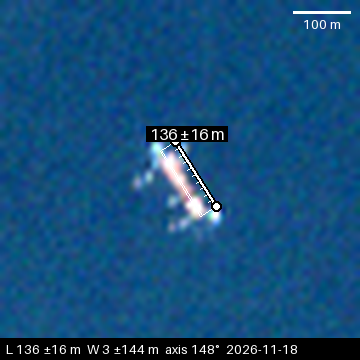

TARGET · 136 m
Sentinel-2 · Optical
Sentinel 2 Ship Tracker
Scans Sentinel-2 imagery over a region you pick, detects vessels, and follows them across passes so you can see where they came from and where they're heading.
- Ship detection on 10 m optical imagery
- Track vessels across repeat passes
- Export positions as GeoJSON / CSV